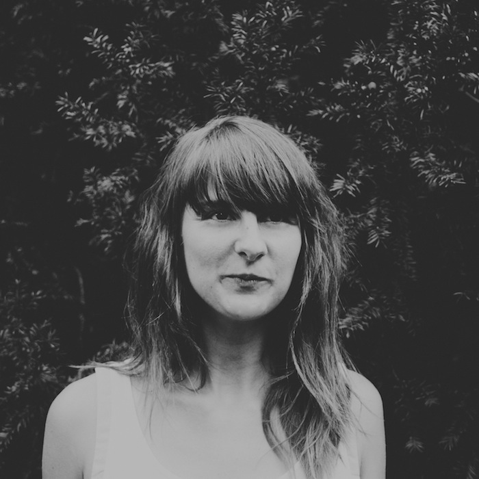
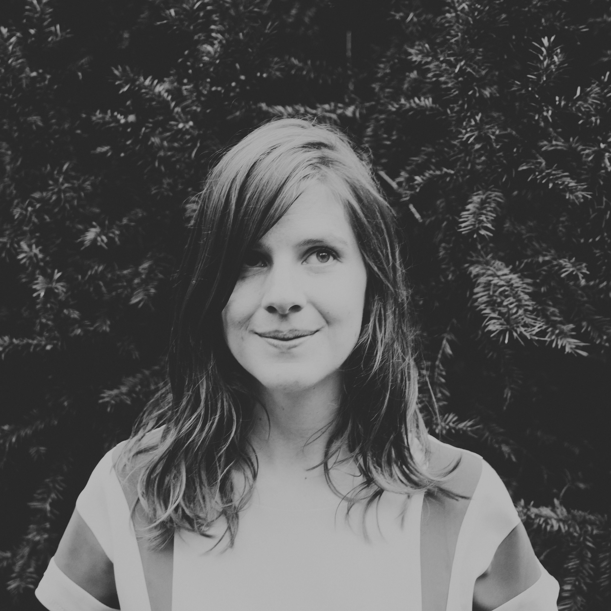

IN PRAISE OF F{LLY
String Quartet
Studio•Stage•Tour
about
What does it mean to be a Millenial and a classically-trained musician?
Raised on the internet, around open-source concepts, and to embody some of the most progressive political and social values in history, we are classical musicians
who are a unique product of our generation.
Concretely, this translates into the ideas of collaboration, expansion, and genre-blending. Despite a lifetime of classical training,
we do not close the door to collaboration with other genres, we thrive on it. Anything is allowed.
Brussels-based, we are a group of classically-trained strings who had continually crossed paths in projects spanning the poles from Bluegrass chop techniques, jazz improvisation, minimalism, baroque, theater, pop, symphonic orchestra to electronica. In a desire to funnel this passion for the classical, the non-classical and the collaborative, In Praise of Folly is a string quartet that offers a shared desire to bring the unique color of strings to a non-classical domain by supporting the unique worlds’ of pop artists. And at the same time, a drive to contribute to the world of classical music is the motivating factor for our work with young Millenial composers to create new, contemporary chamber music.
With over 100 years combined experience playing classical and non-classical music, we perform on stage and in the studio with independent, rock, and pop bands in Europe and beyond. While able to perform acoustically, we are also well-versed in performing using amplification, in-ear microphones or on clicks; reading traditional sheet music as well as chord charts and from memory. We can also provide backup vocals, some secondary instruments, and string arrangements.
Brussels-based, we are a group of classically-trained strings who had continually crossed paths in projects spanning the poles from Bluegrass chop techniques, jazz improvisation, minimalism, baroque, theater, pop, symphonic orchestra to electronica. In a desire to funnel this passion for the classical, the non-classical and the collaborative, In Praise of Folly is a string quartet that offers a shared desire to bring the unique color of strings to a non-classical domain by supporting the unique worlds’ of pop artists. And at the same time, a drive to contribute to the world of classical music is the motivating factor for our work with young Millenial composers to create new, contemporary chamber music.
With over 100 years combined experience playing classical and non-classical music, we perform on stage and in the studio with independent, rock, and pop bands in Europe and beyond. While able to perform acoustically, we are also well-versed in performing using amplification, in-ear microphones or on clicks; reading traditional sheet music as well as chord charts and from memory. We can also provide backup vocals, some secondary instruments, and string arrangements.

Meg completed her classical musical studies in violin at the Royal Conservatories of Brussels and Liège. Although she performs regularly
in the classical genre as a founding member of the string quartet Quatuor Mp4 or has performed with institutions such as
the Royal Opera of the Monnaie, she currently tours internationally
and records with artists such as A Winged Victory for the Sullen,
Stars of the Lid, Christina Vantzou,
and has recently performed for BBC proms
in Royal Albert Hall.
She is one of the founding members of the Brussels-based Echo Collective and works in intimate collaboration with the Théâtre de l’Ancre in Charleroi, the string quintet Bow, and Dirty Monitor.
She is one of the founding members of the Brussels-based Echo Collective and works in intimate collaboration with the Théâtre de l’Ancre in Charleroi, the string quintet Bow, and Dirty Monitor.
Maia studied violin at the Royal Conservatories of Brussels and currently plays as a fixed
violinist for the renowned Royal Opera of the Monnaie
in Brussels although she has also been a member of the Orkest
de Filharmonie
in Antwerp.
She also plays with different international and Belgian ensembles including Musiques Nouvelles, Boho Orchestra, as well as electronic and rock bands like Woodkid, and The Jungle Syndrome.
She also plays with different international and Belgian ensembles including Musiques Nouvelles, Boho Orchestra, as well as electronic and rock bands like Woodkid, and The Jungle Syndrome.
Nicole studied both violin and viola at Western Washington University,
the Royal Conservatory of Brussels, and the Royal Conservatory of Antwerp.
She currently focuses her musical interests on classical, folk, world and jazz genres and participates in projects with Arco (Jim O'Rourke), Trash à Cordes, Juan Quintero, Gerardo di Giusto, Gustavo Ecclesia, Philemon le Chien qui ne Voulait pas Grandir, Isildurs Bane, and Juventus Lyrica, among others.
She currently focuses her musical interests on classical, folk, world and jazz genres and participates in projects with Arco (Jim O'Rourke), Trash à Cordes, Juan Quintero, Gerardo di Giusto, Gustavo Ecclesia, Philemon le Chien qui ne Voulait pas Grandir, Isildurs Bane, and Juventus Lyrica, among others.

Cellist Annemie completed her cello studies at the Conservatory of Luxembourg, University of Leeds,
and the Royal Conservatory of Brussels.
Particularly interested in Jazz, improvisation, and World Music, Annemie performs and tours with ensembles such as Oak Tree, Mathilde Renault, Inuk, Philemon le Chien qui ne Voulait pas Grandir, Julia Goes Mercutio, and Jihye Lee.
Particularly interested in Jazz, improvisation, and World Music, Annemie performs and tours with ensembles such as Oak Tree, Mathilde Renault, Inuk, Philemon le Chien qui ne Voulait pas Grandir, Julia Goes Mercutio, and Jihye Lee.